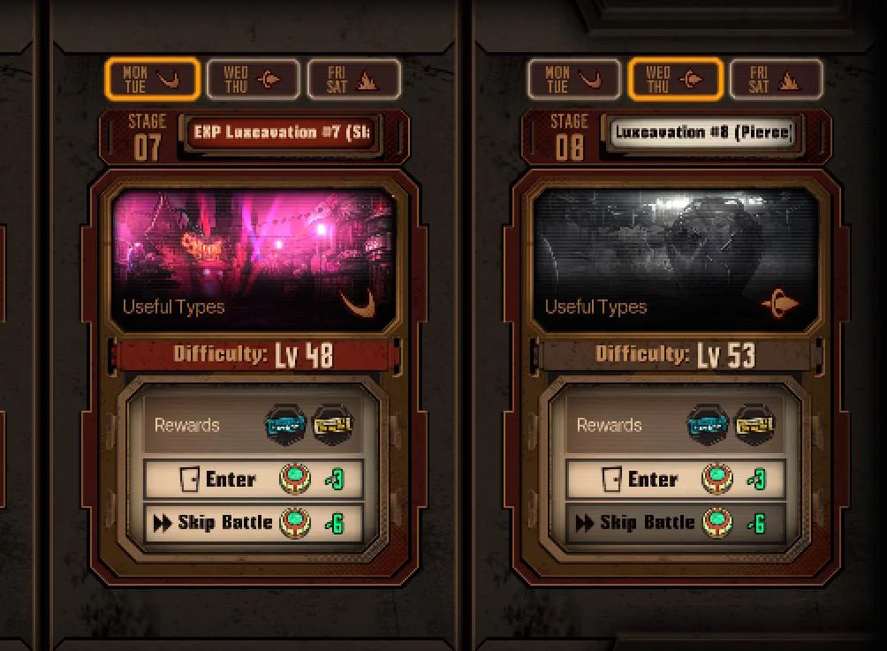
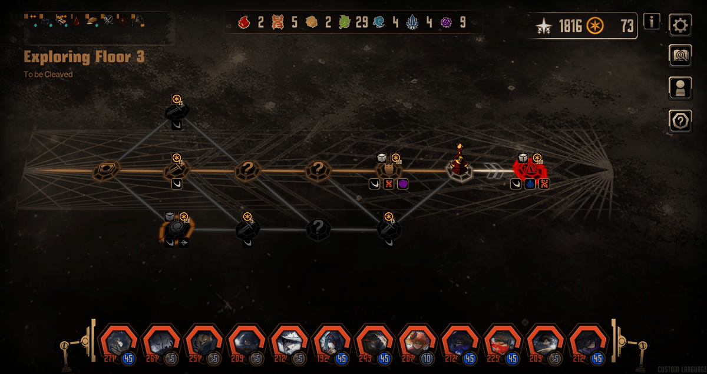

Modos de juego
Elige una pestaña para ver cada modo.
Inferno (Modo Historia)
Es la campaña principal. Avanzas por los Cantos, cada uno centrado en un Pecador y ambientado en una zona de La Ciudad, con escenas narrativas intercaladas con combates. Cada Canto tiene un Pecador de foco y una ubicación concreta; por ejemplo, el Canto II es el de Rodion y transcurre en el Distrito 10. Al final de cada Canto hay una mazmorra de historia, una secuencia larga de combates donde se resuelve la misión por la Rama Dorada.
Entre los Cantos hay también capítulos secundarios llamados Intervallos y mini episodios ligados a eventos. Según la wiki, la historia llega por ahora hasta el Canto X, y cada nuevo Canto desbloquea más contenido en los otros modos.

Luxcavation (EXP y Thread)
Es un modo secundario para farmear materiales de forma directa: enfrentas a los Pecadores contra enemigos concretos a cambio de recompensas, hay dos variantes:
Luxcavation de EXP: una por cada Canto, con enemigos de esa zona. Dan Tickets de entrenamiento para subir de nivel Identidades. Los enemigos son débiles al tipo de daño recomendado así que armas el equipo según el día y el escenario.
Luxcavation de Thread: Siete tipos, correspondientes a los tipos de afinidad que hay en el juego, cambian con cada dia de la semana. En este te enfrentas a Abnormalidades y al completarlo te darán Thread, el cual se usa para mejorar Identidades y E.G.O. Tiene un bono diario, hasta tres veces al día, que duplica el Thread obtenido.

Mirror Dungeon
Es el modo de contenido repetible y de mayor profundidad. Recorres una mazmorra generada al azar, y se anima a construir un conjunto de E.G.O Gifts adaptado a las Identidades desplegadas, eligiendo entre distintos packs temáticos y encuentros a medida que subes de piso.
Entrar es gratis, pero cobrar las recompensas (Lunacy y XP del pase) cuesta Módulos de Enkephalin. Cada semana se recargan 3 bonos semanales.
Se renueva cada temporada con reglas distintas. Añadiendo nuevos pisos (floor packs) E.G.O gifts y jefes.